Cimatron Mold est une solution CAO/FAO intégrée dédiée à la fabrication de moules, de l'établissement du devis à la fabrication, en passant par la conception. Livrez des moules de haute qualité, de toute complexité et de toute taille, en un temps record.
Cimatron Mold est une solution CAO/FAO intégrée développée pour aider les moulistes à concevoir et à produire des moules de toutes tailles et de tous complexes à partir d'une interface unique et transparente.
De l'établissement du devis à la conception et à la fabrication, Cimatron Mold aide les fabricants à produire efficacement des moules performants d'une qualité exceptionnelle.

Accélérez l'importation de la géométrie CAO du client dans tous les formats standard et démarrez les travaux en quelques secondes.

De puissantes fonctionnalités de conception de séparations et de cavités aident les moulistes à identifier rapidement les détails importants qui affectent la façon dont les travaux seront exécutés.
Les outils CAO hybrides simplifient la création de surfaces complexes ainsi que la cicatrisation et l'assemblage de géométries, et garantissent que les concepteurs disposent toujours des outils adéquats pour leur travail.
Les capacités de programmation CNC sûres et efficaces comprennent des stratégies d'usinage spécialisées pour l'usinage 2,5 5 axes, des outils de simulation de parcours d'outils avancés et une prise en charge du post-processeur.
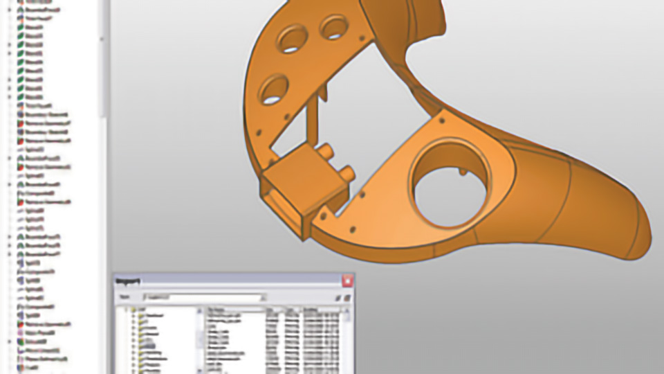
La Fonctionnalité CAO hybride du système simplifie la création de surfaces complexes, la cicatrisation et l'assemblage de géométries, ainsi que le travail avec des modèles non assemblés et des données de mauvaise qualité. Les Fonctionnalités dédiées à la conception de fabrication optimisent l'Usinage en permettant aux utilisateurs d'ajouter des surfaces et des contours, de boucher des Trous et des fentes, d'étendre des surfaces et d'appliquer des Dessins et des Ronds.
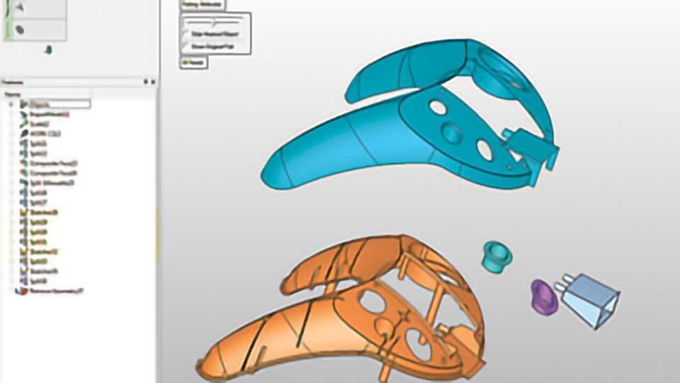
Cimatron fournit l'outil le plus rapide et le plus précis du secteur pour la conception des séparations et des cavités, ce qui aide les moulistes à démarrer rapidement leurs travaux. Les outils d'analyse du système dédiés à l'identification des contre-dépouilles, au contrôle de la géométrie et à la vérification des surfaces des pièces permettent de garantir une séparation parfaite tout en augmentant la confiance dans la conception. Les outils de fabrication de moules dédiés de Cimatron permettent de générer facilement la géométrie des noyaux, des Cavités, des Poussoirs, des Curseurs et bien plus encore, même pour les Moules les plus complexes.
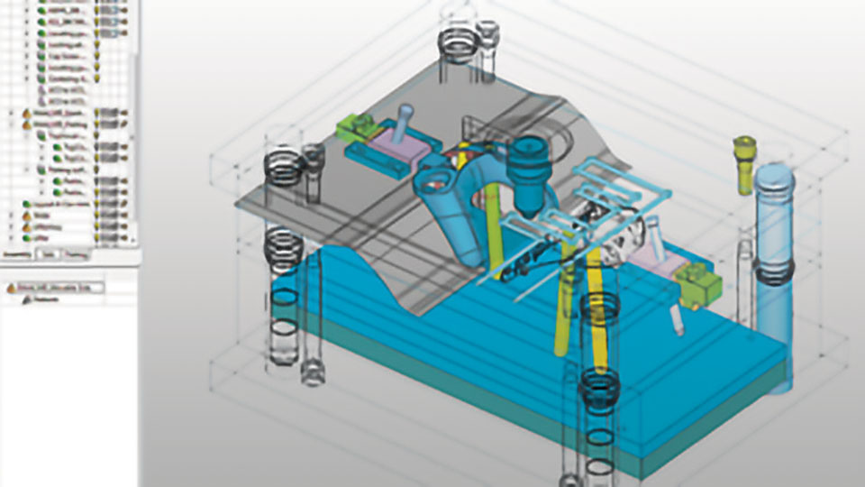
Les conceptions 3D préliminaires aident les moulistes à évaluer les stratégies de production et à obtenir l'approbation des clients. Avec Cimatron, les utilisateurs peuvent concevoir des moules de toute taille et de toute complexité de surface et gérer n'importe quelle disposition de moule, y compris les moules multi-cavités et les moules familiaux. De puissants outils de visualisation simplifient la mise en place des composants des moules tels que les Plaques, les Curseurs, les Poussoirs, les Inserts et autres pièces de catalogue, ainsi que les systèmes de refroidissement, d'éjection et les Canaux.
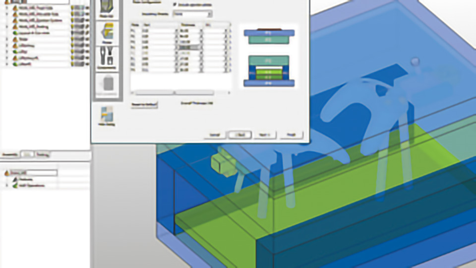
Cimatron permet de charger des jeux entiers de plaques de base de moule à partir de catalogues commerciaux en quelques minutes seulement. Les fabricants de moules peuvent travailler efficacement avec des bases de moules non standards en utilisant un modèle dynamique de base de moule qui inclut tous les composants - Plaques, Curseurs, et plus encore. Les dimensions des composants peuvent être instantanément modifiées et les pièces remplacées dans la base du moule à tout moment du processus de conception.
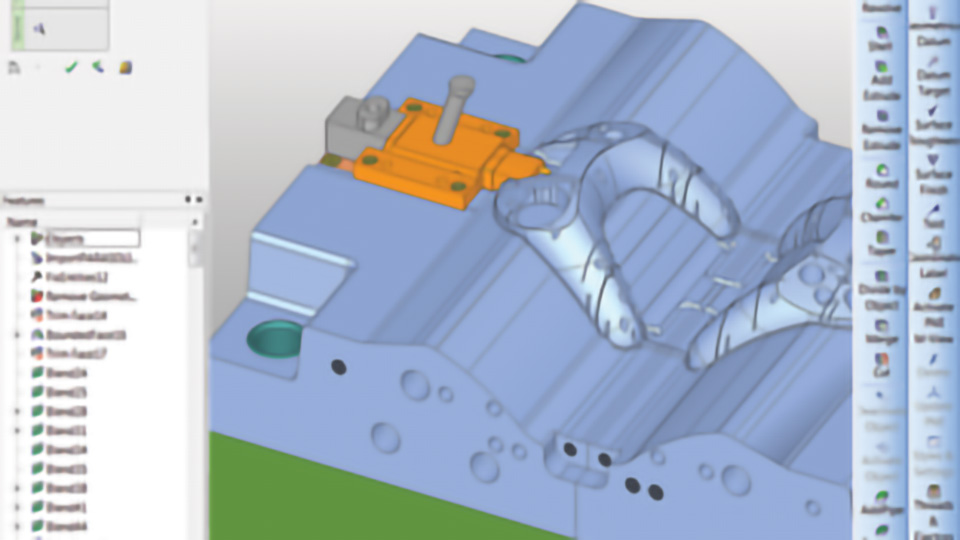
L'automatisation de Cimatron permet de rationaliser la conception rapide des composants principaux du moule, tels que le noyau, la cavité et les curseurs. Les modifications d'ingénierie peuvent être facilement mises en œuvre tout au long du processus car l'associativité avec le travail de séparation initial est maintenue.
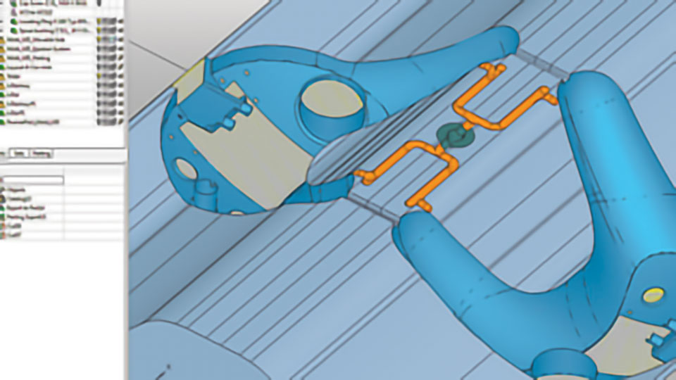
Les outils d'ingénierie flexibles simplifient la conception des canaux et permettent aux moulistes de choisir la méthode de conception qui leur convient le mieux. Les canaux peuvent être esquissés en 2D et convertis automatiquement en Modèles 3D, avec l'ajout de bagues de carotte. Les canaux non planaires peuvent également être conçus en 3D grâce à un mécanisme qui permet d'éviter les contre-dépouilles.
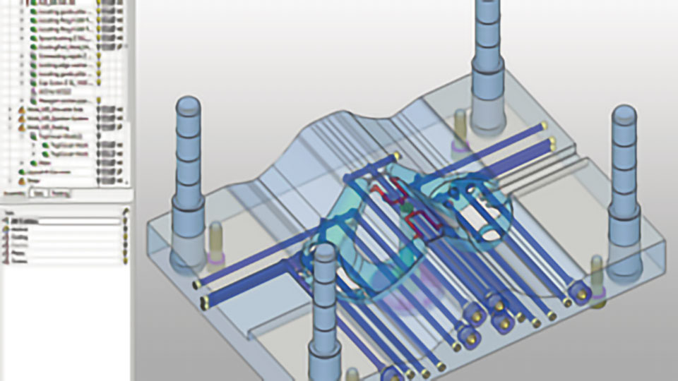
Une variété d'outils de conception, d'analyse et de vérification facilite plus que jamais la conception des systèmes de refroidissement, même les plus complexes. Les outils développés pour la conception des systèmes de refroidissement simplifient la mise en place des canaux et des composants tels que les bouchons, les connecteurs, les déflecteurs, les mamelons, etc. Cimatron identifie les interférences avec les lignes d'eau et alerte les utilisateurs lorsque les canaux de refroidissement sont positionnés trop près d'autres composants clés.
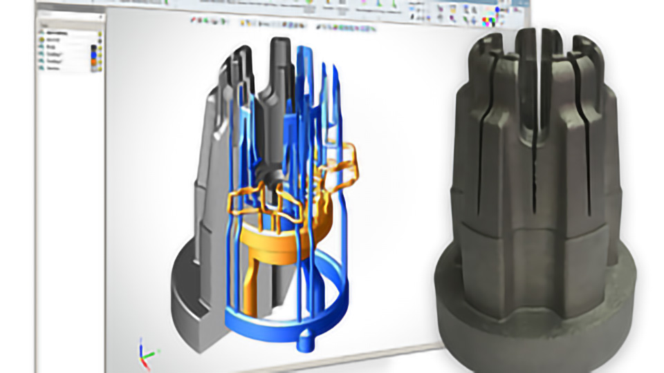
Idéaux pour les applications de fabrication additive, les canaux de refroidissement conformes peuvent réduire considérablement le temps de cycle d'injection. L'ensemble d'outils dédiés de Cimatron pour la conception rapide du Refroidissement conforme aide les moulistes à concevoir les canaux les plus complexes à l'aide d'outils hybrides permettant de travailler avec des maillages, des surfaces, des solides et des filides. Le logiciel calcule également les décalages techniques pour les opérations post-impression et soustractives.
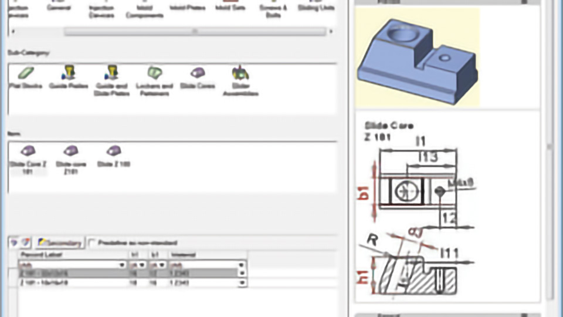
Parcourez une large sélection de bibliothèques de catalogues commerciaux actuels pour trouver les composants parfaits et profitez de la liberté de créer vos propres catalogues personnalisés. Cimatron permet aux utilisateurs d'adapter automatiquement les pièces de catalogue ou les sous-ensembles aux dimensions de l'assemblage principal et aux fonctionsnalités de conception existantes, telles que les dimensions des poinçons.
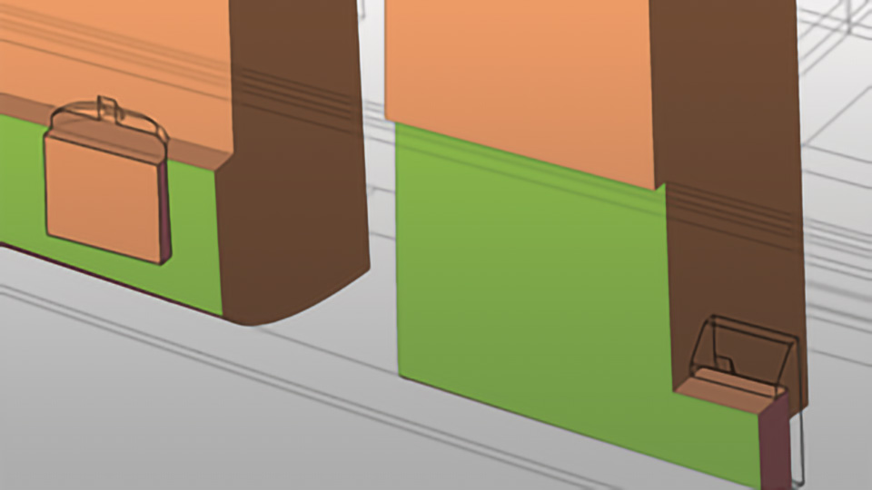
Cimatron permet d'accélérer le processus de conception grâce à des outils dédiés à la conception des poussoirs et des inserts. Les Poussoirs figurant dans les catalogues commerciaux ou définis par l'utilisateur peuvent être placés dans les conceptions en une seule opération. Pour garantir un résultat optimal, même les Poussoirs les plus complexes peuvent être coupés automatiquement tout en prévisualisant les faces du moule. La conception simplifiée des poches de cavités et de noyaux permet de commencer les opérations d'EDM à fil et de fraisage dès le premier jour de la conception.
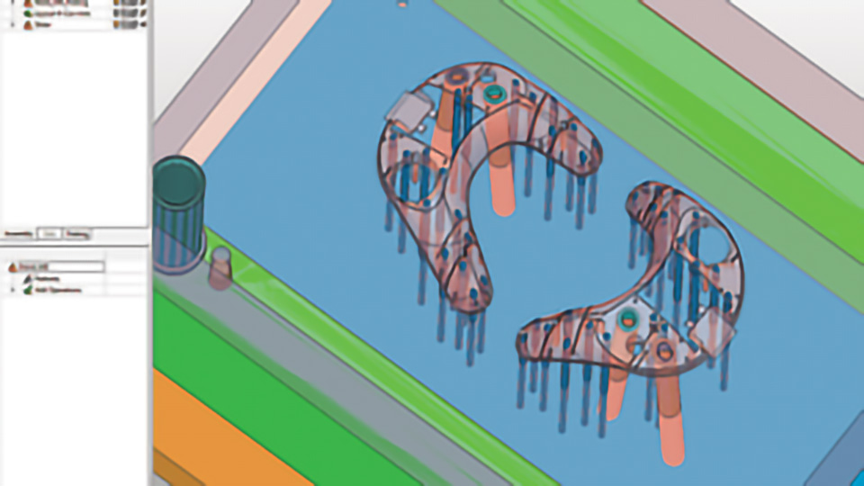
Les outils de conception de systèmes d'éjection simplifient un processus de conception intrinsèquement complexe, car des centaines d'éjecteurs issus de catalogues commerciaux ou définis par l'utilisateur peuvent être ajoutés en une seule étape. Cimatron peut déterminer l'emplacement idéal des éjecteurs, analyser la façon dont les Plaques que les éjecteurs vont croiser et gérer automatiquement le rognage.
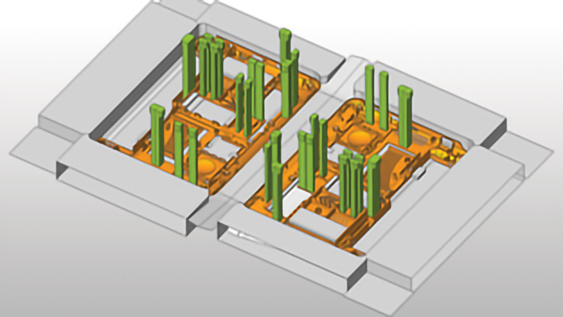
Le Cimatron facilite la conception et la fabrication de fixations pour le montage des inserts imprimés en tenant compte des décalages techniques locaux. Les capacités de fraisage 2,5 axes à 5 axes et de perçage du système peuvent être utilisées pour la finition des trous des pièces et des surfaces de haute précision, tandis que les détails minuscules et complexes peuvent être réalisés avec les fonctions d'électrodes (EDM) du logiciel.
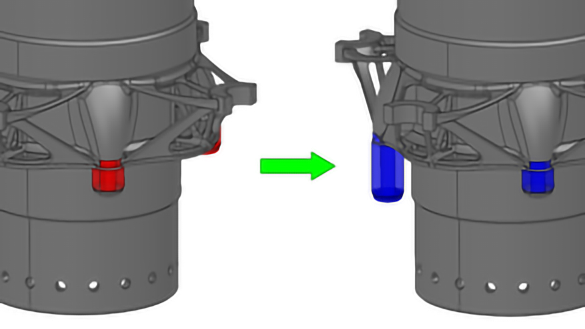
C'est pourquoi il est important de disposer d'un système qui analyse, met en œuvre, vérifie, suit et gère efficacement les ordres de modification d'ingénierie (OMA). Les outils de gestion des OMT de Cimatron facilitent le remplacement automatique de la géométrie existante par la géométrie ECO, l'identification des changements apportés par le client et l'analyse de l'impact de la nouvelle géométrie sur les composants des moules.
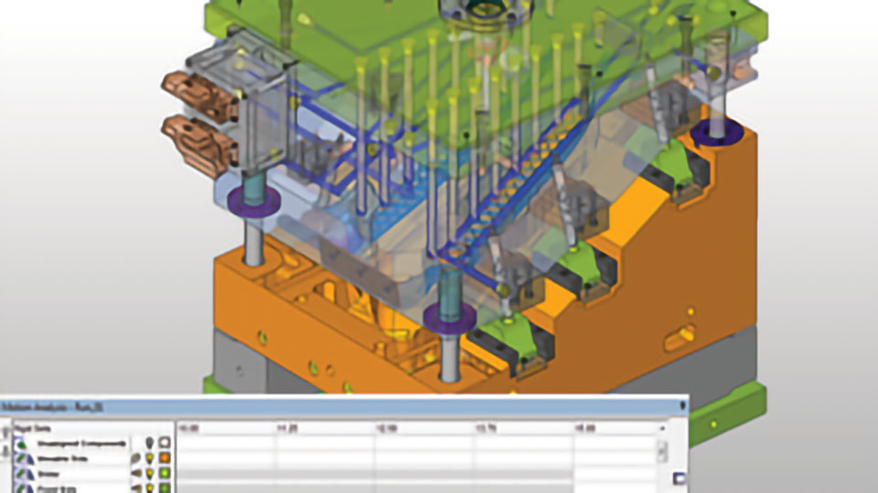
Les conceptions peuvent être rapidement validées grâce à des capacités de mesure, d'analyse et de détection des collisions entièrement intégrées. Les outils d'analyse de l'épaisseur des parois, de l'intégrité du corps, de l'angle et de la direction du dessin facilitent l'identification et la correction des problèmes. La puissante Simulation appliquée à la cinématique de l'outil permet de localiser et d'identifier les collisions et d'éliminer les erreurs de conception.
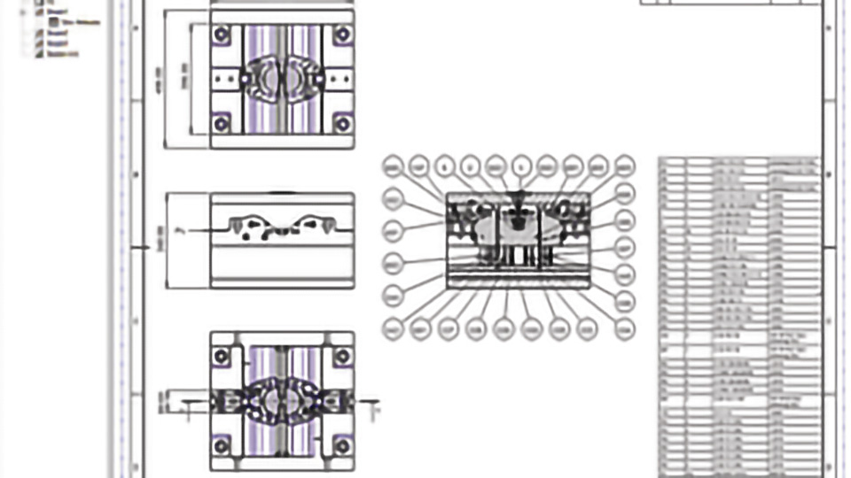
La gamme complète d'outils de dessin de Cimatron permet de générer des dessins contenant les informations nécessaires pour commander des composants, guider les opérateurs de l'atelier, assurer la qualité et fournir une documentation au client. Les vues de dessin peuvent être définies au cours du processus de modélisation et rapidement converties en dessins. La possibilité de créer et de réutiliser des Modèles de dessins qui intègrent les spécifications du client augmente l'efficacité en réduisant les tâches répétitives.
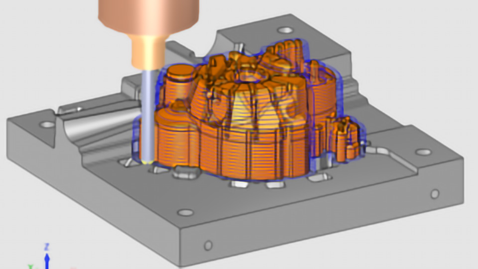
Des graphiques comparant le stock restant au modèle solide permettent aux utilisateurs de prévisualiser les résultats de l'application de paramètres spécifiques à diverses opérations. Les capacités de Détection des collisions et des gouges, ainsi qu'un simulateur d'enlèvement de matière intégré et une carte de déviation avec code couleur aident les fabricants à usiner en toute confiance. Les Modèles ou les séquences d'Usinage peuvent être réutilisés pour le même projet ou pour des projets différents afin d'augmenter l'efficacité de la programmation et de standardiser les meilleures pratiques.
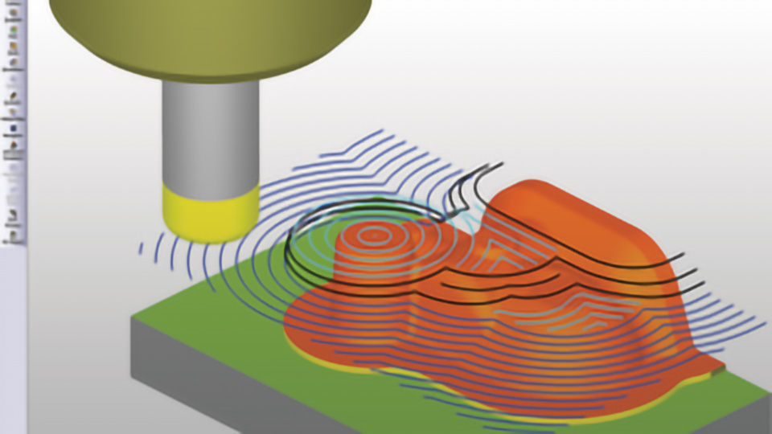
Des opérations de fraisage en grand volume rapides et efficaces peuvent être réalisées à l'aide de stratégies d'usinage spécialisées et de Modélisations 3D du stock mises à jour en permanence. Cimatron génère des Trajectoires d'outils qui tirent parti d'une charge constante de l'outil, d'une technique de fraisage trochoïdale, d'un nettoyage avancé entre les passes, d'une Ébauche efficace entre les couches et d'un Élimination des trajectoires d'outils à la pointe de la technologie.
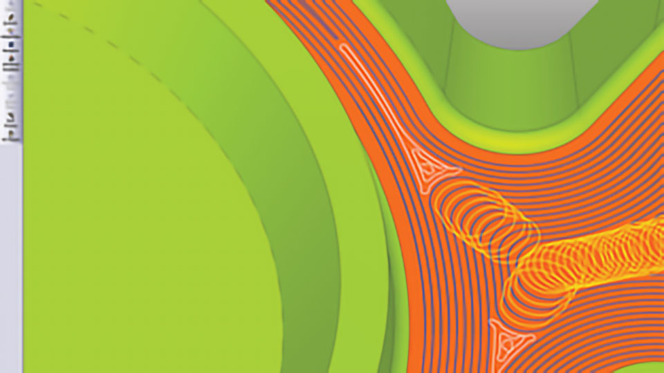
Le logiciel fournit un ensemble robuste de stratégies d'usinage 3 à 5 axes optimisées, notamment des couches Z adaptatives, des mouvements en spirale véritable, des mouvements tout en rondeur, l'Usinage 3 axes, l'Usinage 5 axes, la Finition 5 axes, le Nettoyage adaptatif entre les couches et bien d'autres encore. Les stratégies d'Usinage peuvent être automatiquement adaptées pour obtenir une qualité de surface exceptionnelle et sans polissage en analysant les Pentes locales.
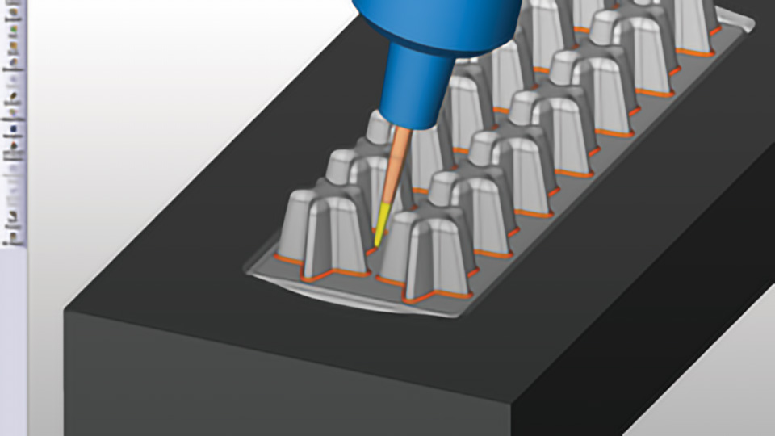
Les Stratégies d'usinage spécialisées prennent en charge une variété d'outils-machines, notamment les outils sucettes, les fraises fentes et les fraises fentes. Le logiciel prend en charge le positionnement et le fraisage continu pour un contrôle total des angles d'inclinaison et d'avance, et fournit des vérifications de gouge et de collision de la queue et du porte-outil de l'outil. La vérification des trajectoires d'outils et la simulation basée sur le post-processeur permettent d'éliminer les essais pour réduire les rebuts.
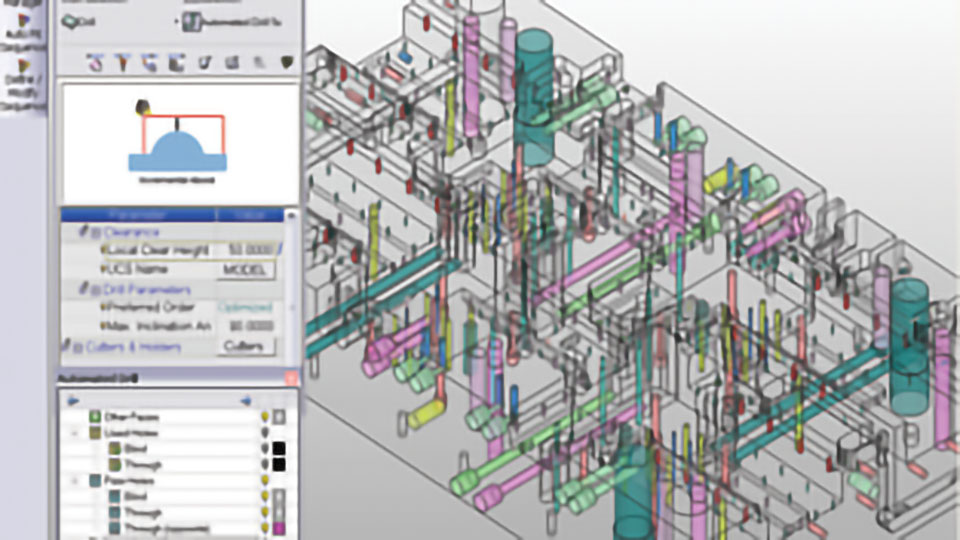
Les capacités de Perçage de Cimatron et les puissantes stratégies de Fraisage de poche et de profilage rationalisent l'Efficacité de l'Usinage des Plaques de Moules sans défaut. Le temps consacré à la programmation des opérations de perçage peut être réduit jusqu'à 90 % grâce à la capacité du logiciel à attribuer automatiquement des séquences de perçage à des centaines de trous en quelques secondes seulement. Les opérations d'usinage par électroérosion à fil à deux et 4 axes peuvent être facilement programmées pour des performances CNC optimales à l'aide d'une base de données intégrée de machines EDM.
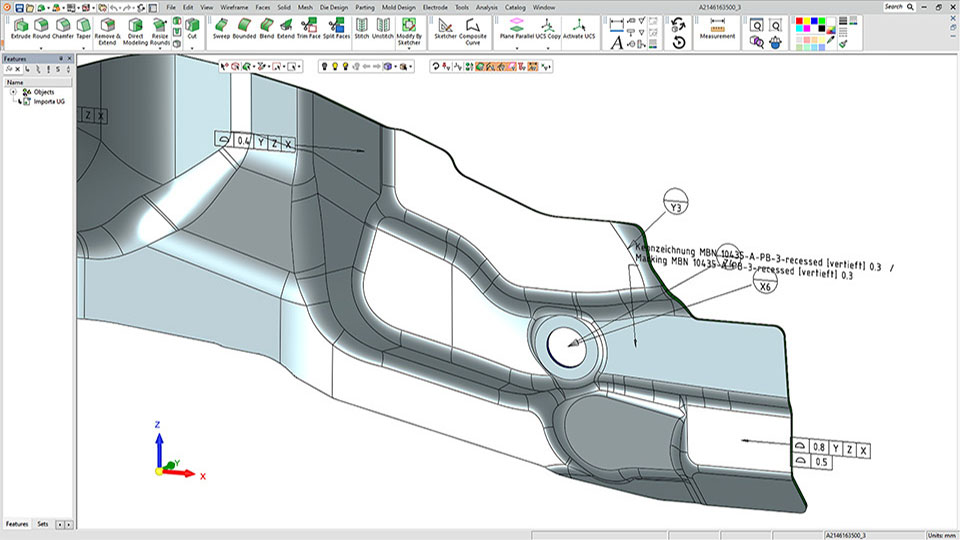
Créez des électrodes facilement et en un temps record à l'aide de la conception hybride d'électrodes de surfaces et de solides couvrant l'ensemble du processus de conception. Garantissez un processus d'érosion sans erreur, avec une définition rapide des éclateurs, de l'Orbitage 2D ou 3D et des Décalages d'ébauche.
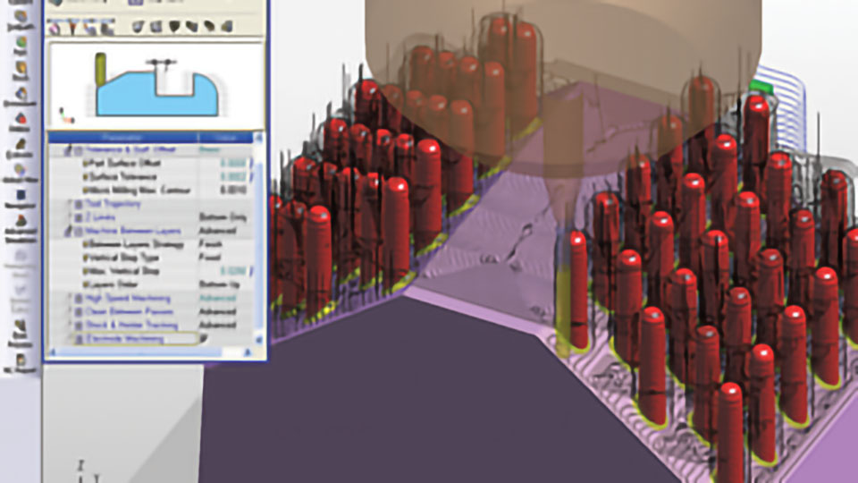
Pionnier dans le domaine du micro-fraisage, Cimatron propose des stratégies de micro-usinage dédiées à la fabrication rentable de moules pour de très petites pièces de haute précision. Le système est capable de produire une superbe qualité de surface avec des tolérances aussi étroites que 0,0001 mm en utilisant des outils de coupe d'un diamètre aussi petit que 0,1 mm.
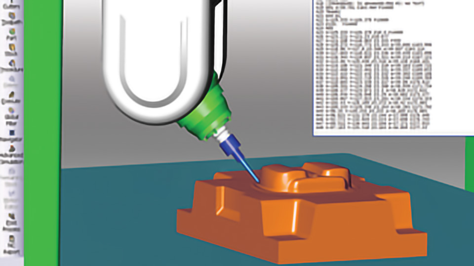
L'écran à code couleur du Cimatron facilite la visualisation des processus de coupe et de leurs résultats avant l'Usinage et l'analyse de la matière restante. La simulation avancée par Code G de la cinématique des machines et des opérations d'usinage comprend la vérification des queues et des porte-outils par rapport aux pièces. Une bibliothèque complète de post-processeurs pour toutes les machines-outils 3 axes et 5 axes, ainsi que pour tous les principaux contrôleurs, garantit une programmation sûre et efficace des machines CNC.
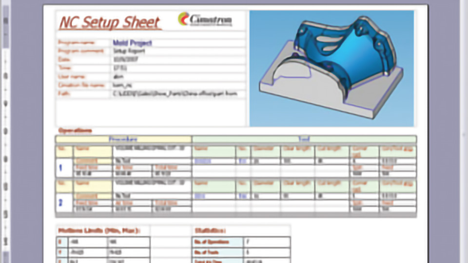
Les rapports de configuration CN et de tables d'outils peuvent être générés automatiquement au fur et à mesure de l'enregistrement des programmes CNC. Cimatron facilite la création de rapports personnalisés qui incluent le logo de l'entreprise, le temps machine, les limites de la machine et d'autres données et paramètres spécifiques à l'utilisateur pour une utilisation dans l'atelier. Les sessions de sortie de Code G peuvent être capturées pour améliorer le contrôle du fraisage, ainsi que pour les travaux futurs.